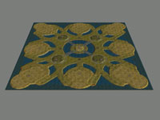
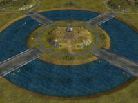
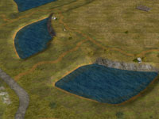
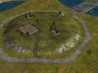
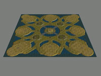
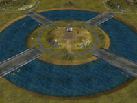
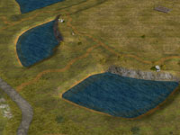
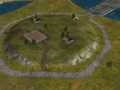

   
   Download this map for Generals Zero Hour or Generals
Minken: "There goes
my command center..."
Well well! I couldn't keep away from making another 8-player map. It's a big
one too!
A large meadow map with lots of water. A central island.
One supply dock in each base area. Extra supply piles nearby and a total of five extra supply docks to fight over. Eight oil derricks but just one oil refinery.
Works very well I must say. The computers starting in the corners will expand earlier and build an impressive amount of units unless stopped.